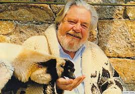

Target
I intend to create the website more focused on desktops, with means a wilder layout. The target that I believe this website will have is people with natural life style, trying to have a healthier diet and that is more interested in health than in money, because sometimes the healthiest is nor the cheapest.
Persona: |
Profile of the target of this website |
|---|---|
Photo: |
 |
Fictional name: |
Henrique Gasparete |
Job title: |
Zookeeper |
Demographics: |
61 years old, married, father of seven children and has Ph.D. in Veterinary, working in the area for nearly 35 years so far |
Goals: |
Be more healhy to be able to spend quality time with his grandchildren in the future. |
Enviroment: |
He is comfortable with the idea of spending money with things that matter, and health is the number one priority. |
Quote: |
"How could anything containing fruits not be delicious?" |